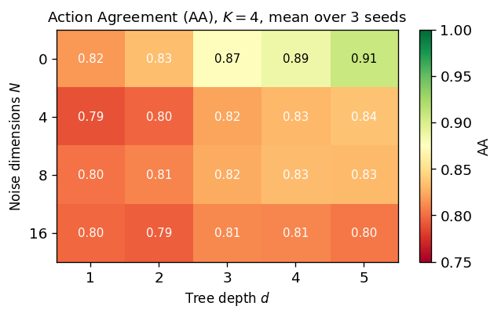
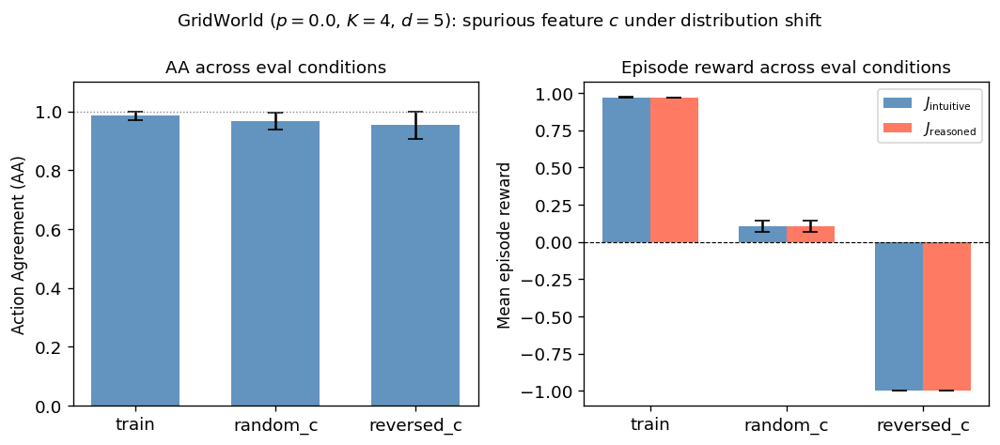
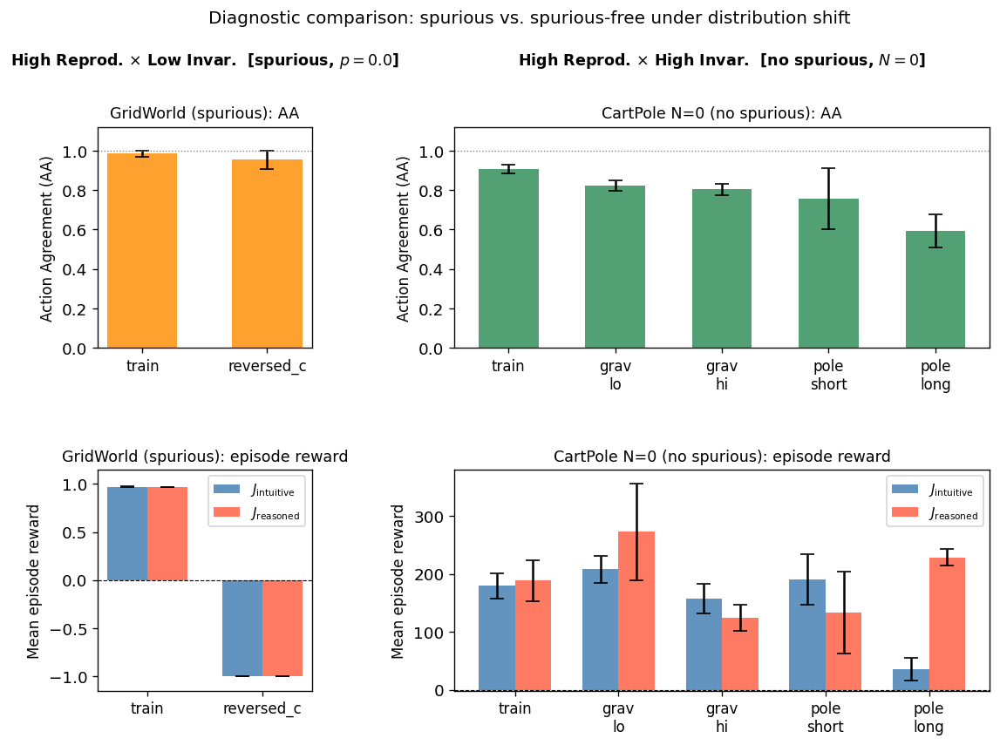
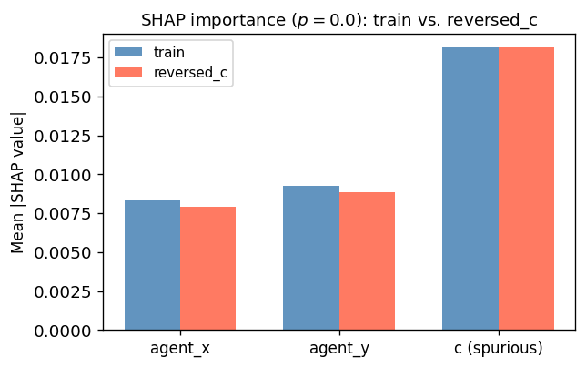

本研究は、強化学習におけるブラックボックス方策の説明可能性を、内部表現の可視化ではなく、外部から与えた構造制約のもとで元の意思決定をどの程度忠実に再現できるかという観点から定義する。元の方策を Intuitive policy、構造制約付きの蒸留モデルを Reasoned model と呼ぶ。Reasoned model は、人間にとって直接わかりやすい説明文を生成することを目的としない。むしろ、元の方策の振る舞いをどこまで圧縮しつつ保存できるかを測るための、制約付き再現装置として用いる。
この立場は、説明を一方向の出力ではなく、共同構成・対話・編集可能性として捉える近年の XAI の流れと整合的である。また、説明をユーザが編集できるようにする研究や、教師の説明を学生へ蒸留する研究は、説明表現を静的な付加物ではなく、再利用可能な中間表現として扱う方向を示している。
本研究の主張は二つである。第一に、構造制約下で高い再現性が得られても、それだけでは説明の正当性は保証されない。第二に、分布シフト下での不変性を併せて評価して初めて、「再現できるが誤っている」方策を識別できる。CartPole の拡張環境と、スプリアス相関を埋め込んだ GridWorld を用いた実験により、構造制約の強さ、入力分布、方策の依存構造が説明可能性の境界を規定することを示す。
説明可能AI、特に強化学習における説明可能化は、長く「説明をどう作るか」に焦点を当ててきた。しかし、局所近似や特徴寄与の可視化だけでは、それが元の意思決定をどれだけ忠実に捉えているのかは自明ではない。事後的説明は、もっともらしい説明を与えながら、実際の依存構造からずれてしまうことがある。さらに、人間向けの説明研究では、理解・信頼・満足が改善する場合もあれば、そうでない場合もあり、説明の価値を単純に一方向へ還元することは難しい。[^1]
本研究は、この問題を「説明文の生成」ではなく、「構造制約のもとで方策がどこまで再現可能か」を問う判定問題として捉え直す。ここでいう構造制約とは、線形性、浅い決定木、あるいは Mixture of Expert Trees（MoET）のような、表現力に明示的な上限を持つモデルクラスを指す。元の方策がその制約の中で十分に再現できるなら、その方策は少なくともその粒度では説明可能だと言える。逆に、再現できないなら、その構造では説明が足りていない。
ただし、再現できることは、正しいことを意味しない。とくに方策がスプリアス特徴に依存している場合、構造制約付きモデルはその依存関係ごと忠実に模倣してしまう。すると、訓練分布上では高い再現性を示しても、分布シフト下では両者とも失敗する。したがって、再現性だけでは不十分であり、不変性の評価が必要になる。
本研究の貢献は次の三点にある。
状態空間を $S$、行動空間を $A$ とし、確率的方策を $\pi_I(a\mid s)$ と表す。ここで $\pi_I$ を Intuitive policy と呼ぶ。これは、強化学習によって学習されたブラックボックス方策であり、内部表現の意味付けは与えない。
Reasoned model は、Intuitive policy を模倣するために学習される構造制約付きのモデルである。Intuitive policy の状態 $s$ を、制約された中間表現 $z \in Z$ に写像する関数を $R$、そこから行動分布を出力する関数を $D$ とすると、
$$ z = R(s), \qquad \pi_R(a\mid s) = D(R(s)) $$
と書ける。ここで $Z$ は、低次元性、単純性、あるいは解釈可能性を持つ表現空間である。
本研究では、Reasoned model を「人間が理解するためのモデル」として直接定義しない。代わりに、元の方策の行動をどこまで保存できるかを測るための制約付き代理モデルとして扱う。
本研究では、説明可能性を単一のスカラーとして評価するのではなく、次の二軸の組として捉える。
この二軸を組み合わせると、以下の四つの診断状態が得られる。
| 不変性：高 | 不変性：低 | |
|---|---|---|
| 再現性：高 | 現在の情報では最も強い説明候補 | spurious な依存を忠実に写している疑いが強い |
| 再現性：低 | 粗すぎる surrogate、または capacity 不足 | 説明として弱い |
本研究はこの分類を確定的な判定基準として提示するものではない。不変性が高いことは因果的な正当性を保証しない。ただし、高い再現性と高い不変性の組み合わせは、その方策の振る舞いが構造制約で記述できており、かつ観測した分布の範囲では整合的であることを示す。逆に、再現性が高くとも不変性が低い場合は、Reasoned model が Intuitive policy のスプリアスな依存を忠実に写した疑いが強い。
複数目的を同時最適化すると学習が不安定になるため、本研究では段階的学習を採用する。
この分離により、Reasoned model の性能は、元の方策の再現能力として解釈しやすくなる。
本研究では、構造制約の強さを比較できるよう、以下のモデルを候補とする。
MoET を主な実装候補とする理由は、構造制約の強さを、専門家数と木の深さによって連続的に調整できるからである。したがって、「どの程度の制約まで再現が成立するか」を境界として観察しやすい。
本研究では次の指標を用いる。
本研究では、AA を再現性の主指標、RPD を性能低下の補助指標とする。KL divergence は、AA が同じでも分布が異なる場合を補う。
実験の目的は二つである。
標準的な CartPole-v1 の状態に、独立なガウスノイズを $N \in {0,4,8,16}$ 次元だけ追加し、DQN で Intuitive policy を学習する。Reasoned model として MoET を用い、専門家数 $K \in {2,3,4}$、深さ $d \in {1,2,3,4,5}$ を変化させる。
この実験は、スプリアス依存そのものを扱うのではなく、構造制約が強くなると再現性がどこで頭打ちになるかを見るための基準実験である。
エージェントの位置 $ (x,y) $ とスプリアス変数 $c$ のみを状態として与え、ゴール位置そのものは観測させない。$c$ はゴールを示すが、その対応は確率 $p$ によって崩れる。
この設定では、Intuitive policy は $c$ に依存して意思決定せざるを得ない。したがって、Reasoned model が高い AA を示しても、それは「正しい依存」を再現しているとは限らない。分布シフトとして、$c$ をランダム化する条件と反転する条件を用い、再現性と性能がどう乖離するかを調べる。
評価は、蒸留に使うデータと独立な評価用データで行う。これは、単なる記憶ではなく再現の汎化を測るためである。同一の環境条件では、各モデルは同一の eval set で比較する。
CartPole にノイズ次元を追加すると、MoET の再現性は深さに応じて改善するが、ノイズが増えるほど上限が下がる。たとえば、$N=0$ では深さ $d=5$ で AA が 0.908 に達する一方、$N=16$ では同じ深さでも AA は 0.804 にとどまる。
この結果は、表現力に制約をかけたとき、再現性には明確なボトルネックがあることを示す。ノイズが増えるほど、構造制約を緩めても完全再現には近づけない。つまり、説明可能性はモデル側の構造だけでなく、入力の複雑さにも依存する。
RPD は CartPole では天井効果のため不安定であり、主要な結論は AA と KL に置くのが妥当である。したがって、本実験の意義は「再現性の構造的上限」を示した点にある。

GridWorld では、スプリアス特徴 $c$ を通じて「再現できるが間違っている」状況を作る。訓練条件では AA が高く、Intuitive policy と Reasoned model の報酬はほぼ一致する。ところが、$c$ を反転した reversed_c 条件でも AA は高いままでありながら、両者の報酬はともに大きく低下する。
この結果は、Reasoned model が Intuitive policy の依存構造を忠実に再現している一方で、その依存自体が分布シフトに対して無効であることを示す。つまり、AA が高いからといって、その説明が正当だとは限らない。

実験2が「再現できるが間違っている」ケースを示したのに対し、実験3はその対照として「再現できて、かつ間違っていない」ケースを示す。スプリアス特徴を含まない CartPole（$N=0$）を対象とし、学習後に物理パラメータを変えることで分布シフトを与える。重力（$g \in {9.8, 5.0, 20.0}$）とポール長（$\ell \in {0.5, 0.25, 1.0}$）の二種類を独立に変化させ、高不変性が特定のシフト種別に依存しないかを確認した。Intuitive policy は実験1の $N=0$ 学習済みモデルを再利用し、Reasoned model には MoET（$K=4$, $d=5$）を用いた。
結果を次に示す（3シード平均±標準偏差）。
| 評価条件 | AA | J_intuitive | J_reasoned | RPD |
|---|---|---|---|---|
| train ($g=9.8$, $\ell=0.5$) | 0.907±0.021 | 179.6 | 188.3 | −0.048±0.152 |
| gravity_lo ($g=5.0$, $\ell=0.5$) | 0.822±0.026 | 208.2 | 272.4 | −0.305±0.367 |
| gravity_hi ($g=20.0$, $\ell=0.5$) | 0.804±0.029 | 158.1 | 124.2 | +0.207±0.159 |
| pole_short ($g=9.8$, $\ell=0.25$) | 0.757±0.153 | 190.3 | 133.5 | +0.301±0.359 |
| pole_long ($g=9.8$, $\ell=1.0$) | 0.594±0.085 | 35.3 | 228.8 | −7.955±6.786 |
重力シフト（gravity_lo, gravity_hi）とポール短縮（pole_short）の三条件において、AA は 0.76〜0.82 を維持し、$J_{\mathrm{intuitive}}$ と $J_{\mathrm{reasoned}}$ はともに正常範囲に留まる。実験2の reversed_c 条件（AA=0.954、$J=-1.000$）と比べると、J の振る舞いは対照的であり、スプリアス依存による壊滅的な崩壊は見られない。これが「再現性高 × 不変性高」の状態の実験的証拠である。
ポール延長（pole_long, $\ell=1.0$）は異なる様相を示す。AA が 0.59 まで低下し、$J_{\mathrm{intuitive}}=35.3$（大幅低下）に対して $J_{\mathrm{reasoned}}=228.8$ という乖離が生じる。これは逆方向のシフトが Intuitive policy 自体の機能を損なっているためであり、スプリアス依存の崩壊とは性質が異なる。Intuitive policy が動作しなくなった分布では AA の解釈が難しくなるという、フレームワーク自体の限界を示すケースとして位置づけられる。
実験2と実験3の対比から、診断枠組みの「再現性高 × 不変性低」（スプリアス依存）と「再現性高 × 不変性高」（依存が有効）の二状態を複数種類の分布シフトで実験的に区別できる。

同じ Intuitive policy に SHAP を適用すると、スプリアス特徴 $c$ は重要特徴として抽出される。これは、SHAP が現在の方策がどの特徴に依存しているかを捉えるという意味では妥当である。ただし、reversed_c 条件でも SHAP の値自体は変わらず、分布シフト後にその依存が無効化される事実は示せない。
この比較が示すのは、特徴寄与の説明と、分布シフト下での正当性評価は別問題だということだ。本研究の枠組みは、SHAP のような局所説明を置き換えるものではなく、それだけでは見えない「依存の有効性」を追加で測るためのものとして位置づけられる。

本研究の位置づけは、説明可能性を「説明文の生成」ではなく「構造制約下での再現可能性と不変性の組」として診断する枠組みを提示した点にある。従来の人間中心 XAI が説明の生成方法に焦点を当てるのに対し、本研究は「どのような条件のもとで説明が成立し、どのような条件で崩壊するか」を問う。この問いは、説明を共同構成・対話・編集可能性として見る研究や、教師の説明を学生へ渡す知識蒸留研究と整合的であり、説明表現を静的な付加物ではなく再利用可能な中間表現として扱う方向と一致する。[^1][^2][^3][^4][^5]
実験結果からは少なくとも次のことが言える。再現性は説明可能性の必要条件だが十分条件ではなく、スプリアス相関が存在する場合には Reasoned model がその依存ごと忠実に写しとってしまう。分布シフト下での不変性を合わせて評価することで、「再現できるが誤っている」ケースを他の状態と区別できる。さらに、スプリアス特徴を含まない環境（実験3）では、重力シフトとポール長短縮という異なる種類の分布シフトに対して AA と J がともに正常範囲に保たれ、「再現できて、かつ間違っていない」状態を複数条件で示すことができた。ただし、ポール長を2倍にした extreme なシフト（pole_long）では Intuitive policy 自体が機能不全に陥り、AA が低下するとともに $J_{\mathrm{intuitive}}$ と $J_{\mathrm{reasoned}}$ が大きく乖離した。この結果は、本枠組みが Intuitive policy の動作が前提となっており、Intuitive が OOD で破綻した条件では AA の解釈が困難になるという限界を示している。ただし、この枠組みは方策の依存構造の因果的正当性を保証するものではなく、あくまで観測された分布の範囲での整合性を診断するものである。
本研究は、強化学習方策の説明可能性を、構造制約下での再現可能性として捉え直した。結果として、再現性が高いだけでは十分でなく、分布シフト下での不変性を併せて見なければ、「再現できるが誤っている」方策を見逃すことが示された。
したがって、説明可能性は単なる可視化の問題ではなく、構造制約、データ分布、評価条件の相互作用として扱うべきである。本研究は、その境界を測るための実装的枠組みを与える。